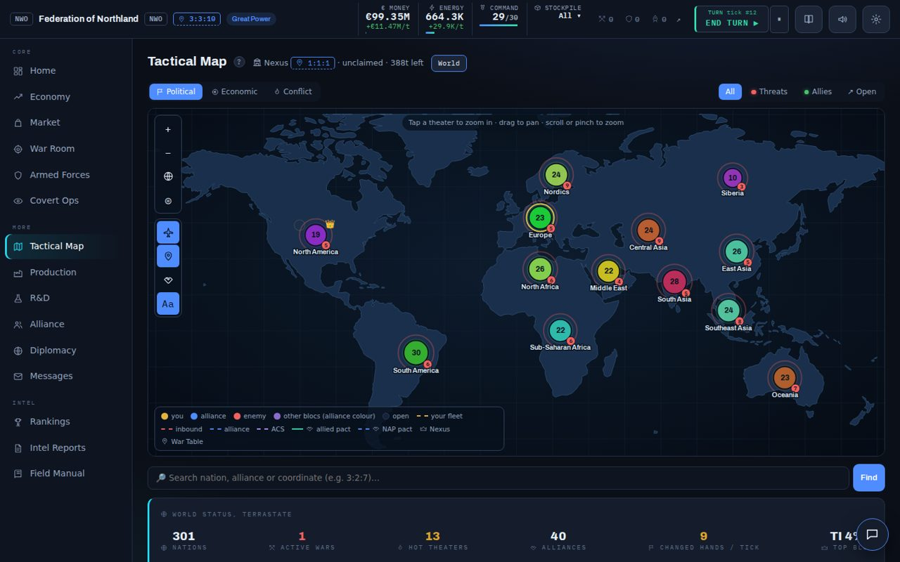
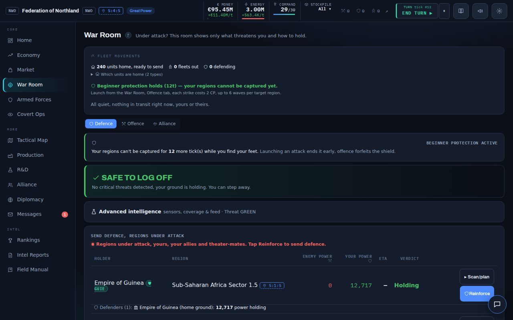
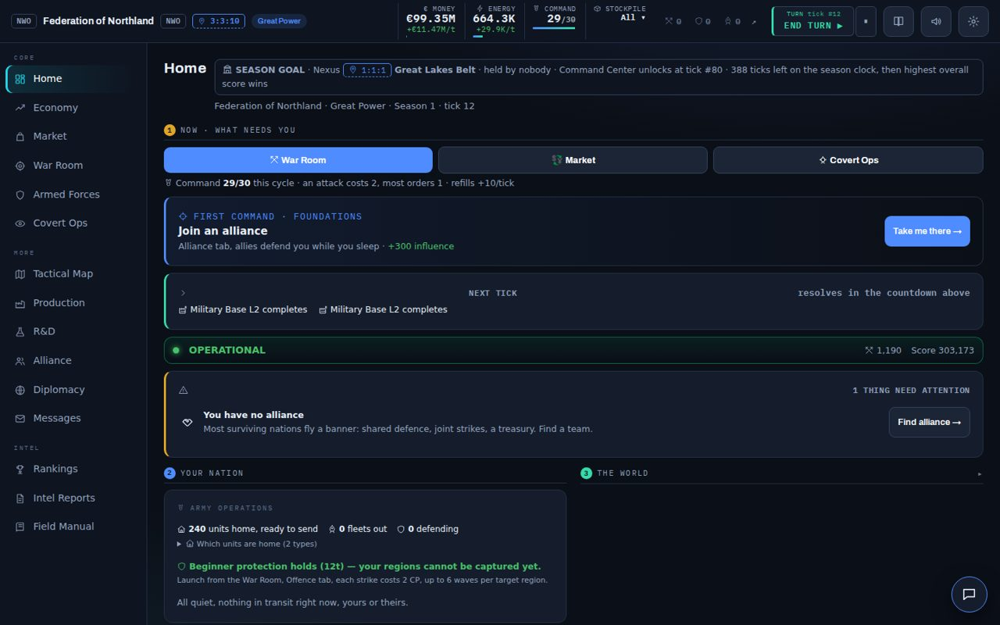
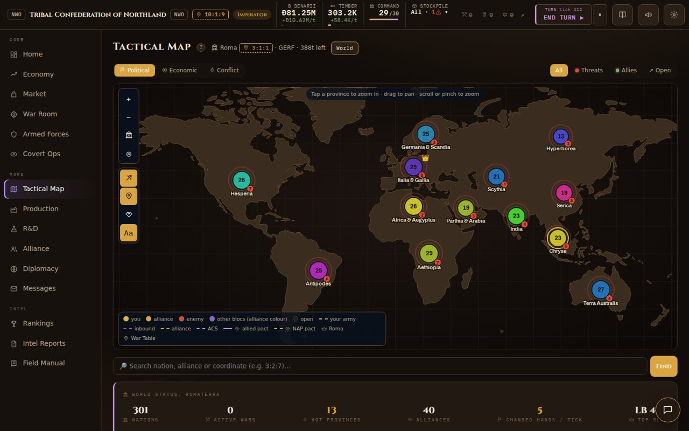

A turn-based geopolitical strategy game against hundreds of AI nations. Free, in your browser, no account and no download. Take it one turn at a time or let the world run at 20x.
Hundreds of AI nations with their own temperament: they trade, ally, betray and go to war, with you and with each other.
Three-phase battles with unit counters, doctrines and logistics. Planning wins, not just numbers.
Found a bloc, sign pacts, run joint operations and call for defence. Alliance victories are shared.
Capture the Nexus, build the Earth Command Center and hold it. If nobody manages, the top score when the clock runs out takes the season.
Six scenarios with one clear goal each, from your first three regions to winning a season on Warlord difficulty.
Turn-based by default: the world waits for you. Or auto-play at 1x, 5x or 20x. Quick, Standard or Epic seasons. Recruit, Veteran or Warlord.



